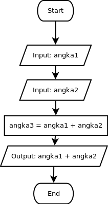

Untuk dilakukan:
Susunlah blok program sehingga sesuai dengan flowchart di bawah ini, kemudian tekan tombol evaluate:

Berbeda dengan contoh sebelumnya, kali ini kita memiliki variable angka3 untuk menampung hasil penjumlahan antara angka1 dan angka2. Dalam perhitungan-perhitungan yang rumit, penggunaan variable dapat membuat sebuah proses terlihat lebih sederhana